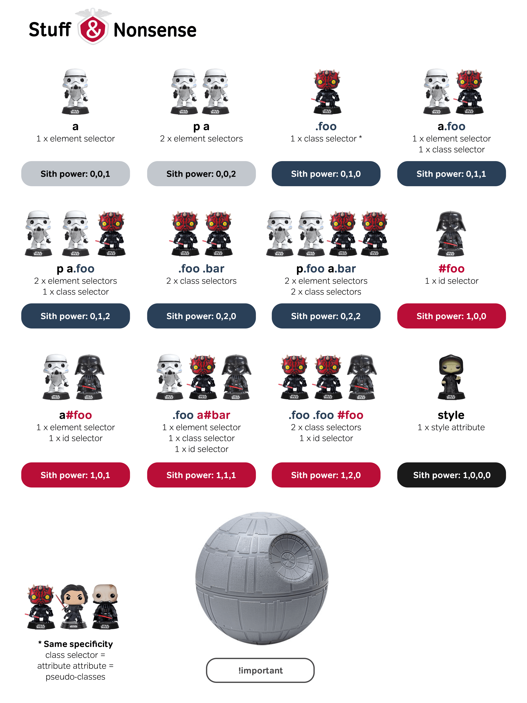
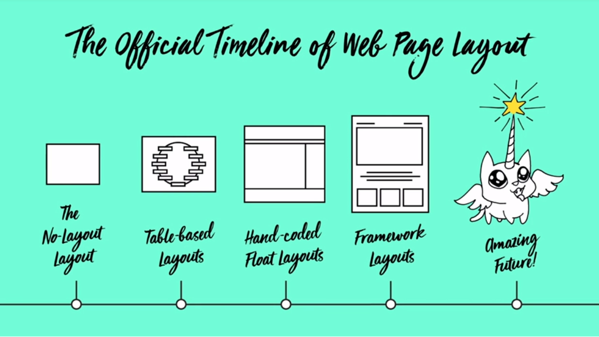

nome do curso
Formador | Paulo Figueiredo

2029
Quem sou eu?
Paulo Figueiredo
frontend developer | designer | formador
palofigueiredo@gmail.comtwitter: @palofigueiredo
Quem são vocês?
Conteúdo programático
- Roadmap
- Evolução CSS
- Utilizar CSS
- Sintaxe e boas práticas
- Conceito de CSS Reset
- Selectores
- Unidades
- Cores
- Tipografia
- Estilizar links
- Backgrounds e Gradients
- Borders e Shadows
- Box model
Conteúdo programático
- Display (inline, block)
- Float
- Elementos de navegação
- Position
- Transform
- Transition
- Animation
- Flex & Grid
- Novas propriedades
- Noções de Responsive Web Design
Links dos bons
Documentação
Links dos bons
Ferramentas (web apps)
Links dos bons
Editores (desktop apps)
Links dos bons
Recursos

Frontend Developer Roadmap
Frontend Developer Roadmap

Frontend Developer Roadmap

Evolução das CSS
Evolução das CSS
- HTML e CSS não foram criados ao mesmo tempo
- Tim Berners-Lee cria em 1989 a WWW
- HTML é usado para partilhar informação, inicialamente, científica
- Só em 1994 surge a primeira referência ao CSS
- Nos anos seguintes discute-se o paradigma autor/leitor
Evolução das CSS

ViolaWWW Browser, 1991
Evolução das CSS
IE 5 (versão Macintosh) com CSS 1, 2002
Evolução das CSS
Zen Garden of CSS, 2003
Evolução das CSS
(C)ascading (S)tyle (S)sheets
Evolução das CSS
O CSS trata da camada de apresentação do html
- Coes
- Tipografia
- Dimensão e espaço entre elementos
- Posição na página
- Comportamento responsivo
Evolução das CSS
Especificidade

Evolução das CSS
Especificidade
CSS Specificity Wars
Utilizar CSS
Utilizar CSS
-
Interno
css escrito na tag<style> -
Inline
css escrito directamente no elemento:<p style="color: tomato;"></p> -
Externo
ficheiro de css externocss/estilos.css
Utilizar CSS
CSS Interno
<style>
p { color: #666; }
</style>
Utilizar CSS
CSS Inline
<p style="color: red;">World Academy!</p>
Utilizar CSS
CSS Externo
<link rel="stylesheet" href="estilos.css">
Sintaxe e boas práticas
Sintaxe e boas práticas
Nomear classes e id's
(caracteres proibídos)
.2colunas cor {} üí©
.2colunas.cor {} üí©
.2colunas#cor {} üí©
Sintaxe e boas práticas
Nomear classes e id's
(caracteres proibídos)
.colunas-2-cor {} üëç
.colunas_2_cor {} üëç
.colunas2cor {} üëç
#colunas-2-cor {} üëç
Sintaxe e boas práticas
Espaços e linhas
- Deixar um espaço entre nome da class e chavetas
.titulo{}üí©
.titulo {}üëç
Sintaxe e boas práticas
Espaços e linhas
Em declarações de uma linha, deixar um espaço entre propriedades
.titulo{color:tomato;font-size:26px;} üí©
.titulo { color: red; font-size: 26px; } üëç
Sintaxe e boas práticas
Em declarações multilinha, cada propiedade na sua linha
.titulo {
color: red;
font-size: 26px;
text-transform: uppercase;
}
Sintaxe e boas práticas
- Não iniciar valores decimais com zero
üí©0.5
üëç.5
Sintaxe e boas práticas
- Valores hexadecimais em minúsculas
üí©color: #BADA55;
üëçcolor: #bada55;
Sintaxe e boas práticas
- Evitar especificar unidades quando os valores forem 0
üí©margin: 0px;
üëçmargin: 0;
Sintaxe e boas práticas
Em selectores agrupados, cada um na sua linha
üí©
.selector1, .selector2, .selector3 {
color: tomato;
font-size: 26px;
}
Sintaxe e boas práticas
Em selectores agrupados, cada um na sua linha
üëç
.selector1,
.selector2,
.selector3 {
color: tomato;
font-size: 26px;
}
Sintaxe e boas práticas
Comentários
üí©
/* main nav */
.main-nav {
...
}
Sintaxe e boas práticas
Comentários
üëç
/* wrapper para lista navegação principal desktop e mobile */
.main-nav {
...
}
Sintaxe e boas práticas
Comentários
- Servem para legendar ou resumir o código
- Podem também servir para activar ou desactivar código
- Devem comentar o contexto do código e não apenas repetir o nome do selector
Conceito de CSS Reset
Conceito de CSS Reset
"O reset tem como objectivo unificar as inconsistencia css dos browsers"
Conceito de CSS Reset
Chrome (desktop), Firefox, IE11 e Safari
Conceito de CSS Reset
* {
padding: 0;
margin: 0;
line-heigth: 1;
box-sizing: border-box;
}
Selectores
Selectores CSS
Sintaxe CSS
selector { propriedade: valor; }

Selectores CSS
- Básicos
- Múltiplos
- Pseudo-classes
- Pseudo-elementos
Selectores CSS
1. Básicos
- Tag
p { color: tomato; } - Class
.destaque { color: tomato; } - Id
#destaque { color: tomato; } - Universal
* { color: tomato; }
Selectores CSS
1. Básicos
- [Attr] (contém
atributo)
[autoplay] { color: tomato; } - [Attr = val] (atributo =
valor)
[target = _blank] { color: tomato; } - [Attr ~= val] (atributo contém
valor)
[href ~= flag.pt] { color: deeppink; } - [Atributo ^= valor] (atributo contém valor começado
por)
[lang ^= ao] { color: red; }
Selectores CSS
1. Básicos
- [Atributo $= "valor"]
(atributo contém valor terminado por)[href ^= ".pdf"] { color: tomato; } - [Atributo *= "valor"]
(atributo contém algures valor)[href *= "placecage"] { color: tomato; }
Selectores CSS
2. Múltiplos ou agrupados
- Múltiplo A, B
p, a { color: tomato; } - Descendente A B
p span { color: tomato; } - Irmão adjacente A + B
li + li { margin-top: 10px; } - Filhos directos A > B
p > a { color: tomato; } - Irmãos gerais A ~ B
p ~ span { color: tomato; }
Selectores CSS
3. Pseudo-classes
- :active
a:active { color: deeppink; } - :link
a:link { color: gold; } - :hover
a:hover { color: tomato; }
Selectores CSS
3. Pseudo-classes
- :visited
a:visited { color: grey; } - :focus
input:focus { outline: 1px solid blue; } - :required
input:required { outline: 1px solid tomato; }
Selectores CSS
3. Pseudo-classes
- :first-child &
:last-child
li:first-child { color: lime; } - :first-of-type &
:last-of-type
li:first-of-type { color: gold; } - :nth-child(#)
li:nth-child(2) { color: orange; } - :nth-child(odd/even)
li:nth-child(odd) { color: tomato; }
Selectores CSS
3. Pseudo-elementos
- ::before
q::before { content: "«"; color: grey; } - ::after
q::after { content: "»"; color: grey; } - ::placeholder
input::placeholder { color: grey; }
Unidades
unidades CSS
- Unidades absolutas
- Unidades relativas
Unidades CSS
1. Unidades absolutas
| Unidade | Descrição |
|---|---|
| in | inches (1in = 96px = 2.54cm) |
| px * | pixels (1px = 1/96th of 1in) |
| pt | points (1pt = 1/72 of 1in) |
Unidades CSS
2. Unidades relativas
| Unidades | Descrição | |
|---|---|---|
| em | Relativo ao font-size do elemento (2em = 2x font-size) |
|
| rem | Relativo ao font-size do body | |
| vw | Relativo a 1% da largura do viewport* | |
| vh | Relativo a 1% da altura doviewport* | |
| % | Relativo à largura do elemento ascendente |
* referente à janela do browser
Cores
Cores
- Cores literais
tomato, black, orange, coral - Cores hexadecimal
#00FFFF - RGB/RGBA
rgb(0,0,0), rgba(0,0,0,.5) - HSL/HSLA
hsl(180, 100%, 50%), hsla(180, 100%, 50%, .5)
Cores
Tipografia
Tipografia
font-family
(web safe, fonts de sistema)
- font-family: serif
- font-family: sans-serif
- font-family: monospaced
- font-family: fantasy
- font-family: script
Tipografia
font-family @font-face
(fonts externas, ficheiros locais)
@font-face {
font-family: myFirstFont;
src: url("fonts/sansation_light.woff");
}
p { font-family: "sansation_ligh", serif; }
Tipografia
font-family @font-face
(fonts externas, bibliotecas web)
-
Escolher font numa biblioteca online
Ex: Google Fonts - Adicionar o link
<link href="https://fonts.googleapis.com/css?family=Raleway" rel="stylesheet"> -
Criar css
p { font-family: 'Raleway', sans-serif; }
Tipografia
font-style
- font-style: normal;
- font-style: italic;
- font-style: oblique;
Tipografia
font-size
- font-size: 20px;
- font-size: 120%;
- font-size: 1em;
- font-size: 1rem;
- font-size: smaller;
Tipografia
Font weight
- font-weight: normal;
- font-weight: bold;
- font-weight: 100; (100 a 900)
Tipografia
Font variant
- font-variant: normal;
- font-variant: small-caps
Tipografia
Color
- color: tomato;
- color: #444444;
- color: rgba(0,0,0,.5);
Tipografia
Text align
- text-align: left;
- text-align: center;
- text-align: right;
Tipografia
Text decoration
- text-decoration: none;
- text-decoration: overline;
- text-decoration: line-through;
- text-decoration: underline;
Tipografia
Text transform
- text-transform: uppercase;
- text-transform: lowercase;
- text-transform: capitalize;
Tipografia
Text ident
- text-indent: 50px;
Especifica o espaço de indentação da primeira linha
Tipografia
Text direction
- direction: ltr;
- direction: rtl;
Nota: deve ser usado em conjunto com atributo "dir"
<p dir="rtl"></p>
Tipografia
Letter spacing
- letter-spacing: 3px;
- letter-spacing: -3px;
Links
Links
<a href="https://www.sapo.pt" target="_blank">Sapo.pt</a>
<a href="https://www.sapo.pt">
<img src="img/logo.jpg" alt="Portal Sapo">
</a>
Links
Elemento inline
a { color: orange; }
Links
Link states
- Link (default up)
- Visited (cor roxa)
- Focus (contorno azul)
- Hover
- Active (down)
Links
Pseudo-classes servem para aplicar css a Links
selector:pseudo-class
- a:link
{ color: black; } - a:visited
{ color: grey; } - a:focus
{ outline: 1px dashed orange; } - a:hover
{ color: deeppink; } - a:active
{ color: #fff; baclground: orange; }
Links
.btn { color: tomato; }
.btn:hover,
.btn:focus {
outline: 1px dashed orange;
}
Backgrounds & Gradients
backgrounds & gradientes
- background-color
- background-image
- background-repeat
- background-position
- background-size
- background-attachment
backgrounds & gradientes
1. Background color
background-color: tomato;
backgrounds & gradientes
2. Background image
Imagens
background-image: url("images/luar.jpg");
backgrounds & gradientes
2. Background image
Gradientes de cor
- linear
- radial
linear-gradient(direcção, cores)
backgrounds & gradientes
2. Background image
Gradientes de cor linear
background-image: linear-gradient(gold, tomato);
background-image: linear-gradient(to left, gold, tomato);
background-image: linear-gradient(45deg, gold, tomato);
backgrounds & gradientes
2. Background image
Gradientes de cor radial
background-image: radial-gradient(gold, tomato);
backgrounds & gradientes
2. Background image
Gradientes com color stops
background: linear-gradient(45deg, gold 60%, tomato 0);
backgrounds & gradientes
3. Background repeat
- background-repeat: no-repeat;
- background-repeat: repeat-x;
- background-repeat: repeat-y;
- background-repeat: space;
- background-repeat: round;
backgrounds & gradientes
4. Background position
- background-position: left top; *
- background-position: 50% 50%;
- background-position: 100px 0;
* left, top, center, right, bottom
backgrounds & gradientes
4. Background size
- background-position: left top; *
- background-position: 50% 50%;
- background-position: 100px 0;
* left, top, center, right, bottom
backgrounds & gradientes
5. Background attachment
- background-attachment: scroll;
- background-attachment: fixed;
- background-attachment: local;
Borders & Shadows
Borders & sombras
Borders
Borders & sombras
border: 1px solid tomato;
- border-width
- border-style
- border-color
Borders & sombras
border-style
- solid
- dotted
- dashed
- inset
- none
Borders & sombras
border-radius
Borders & sombras
border-radius
|
|
|
|
|
Borders & sombras
border-radius
|
|
|
|
Borders & sombras
Sombras
Borders & sombras
Sombras
box-shadow: 5px 10px #000;
none|h-offset v-offset blur spread color
Borders & sombras
Sombras
box-shadow
|
|
|
Borders & sombras
Sombras
box-shadow
|
|
|
Borders & sombras
Sombras
box-shadow
|
|
Borders & sombras
Sombras
box-shadow
Box Model
Box model


Content (conteúdo)
Padding (espaço
interior)
Border (contorno)
Margin (espaço exterior)
Box model
Content
Zona do conteúdo do elemento: textos, imagens, multimédia
Box model
Padding
Espaço interior do elemento
Box model
Border
Contorno do elemento
Box model
Margin
Espaço exterior ao elemento
Box model
BorderBox-sizingHeight / widthMarginPadding
Box model
1. Border
border: 1px solid tomato;
(border-width, border-style, border-color)
Box model
2. Box sizing
box-sizing: content-box;box-sizing: border-box;
Define o modo de cálculo das dimensões do elemento, com ou sem padding e borders
Box model
2. Box sizing
content-box / border-box
Box model
2. Box sizing
Overflow
overflow: visible | hidden | scroll | auto
Propriedade overflow controla a relação conteúdo/container
Box model
3. Width & height
width: 300px;height: 200px;
Box model
4. Margin
Margin representa o espaço exterior do elemento
margin: 20px;margin: 10px 5px;margin: 10px 30px 5px 30px;
Nota: Margin pode ter valores negativos
Box model
5. Padding
Padding representa o espaço interior do elemento
padding: 20px;padding: 10px 5px;padding: 10px 30px 5px 30px;
Display: Inline & Block
Display
Permite definir ou alterar o comportamento do elemento
Elementos inline
<a> <span> <img>
Elementos block
<div> <ul> <h1> <flex>
Display
Altera o comportamento do elemento
- display: inline;
- display: inline-block;
- display: block;
- display: none;
Float
Float
- Serve para alinhar elementos e permitir que o texto possa fluir ao seu lado
- Propriedade com resultados algo imprevisíveis
- Altera o comportamento dos elementos circundantes
- Deve ser usada em conjunto com a propriedade clear ou overflow
Float
float: left | right | none
Float
Exemplo de resultado indesejável
(altura do texto menor que imagem)
Float
Para evitar comportamentos indesejados no markup, deve-se terminar um float com as propriedades clear, ou em alternativa, o método overflow
clear: left | right | bothoverflow: hidden
Elementos de navegação
Elementos de navegação
- Principal padrão de navegação
- Fixa ou móvel no ecrã
- Minificada ou expandida
- Horizontal ou vertical
Elementos de navegação
Navegação horizontal ou vertical

Elementos de navegação
Navegação fixa
Elementos de navegação
Navegação minificada e expandida

Elementos de navegação
- Conjunto ou lista de links
<nav> <ul> <li> <a>
Elementos de navegação
Links
<a>
<a href="cursos.html">Cursos</a>
<a href="modulos.html">Módulos</a>
<a href="blog.html">Blog</a>
Elementos de navegação
Lista de links
<ul> <li> <a>
<ul>
<li><a href="cursos.html">Cursos</a></li>
<li><a href="modulos.html">Módulos</a></li>
<li><a href="blog.html">Blog</a></li>
</ul>
Elementos de navegação
Navegação principal
<nav> <ul> <li> <a>
<nav>
<ul>
<li><a href="cursos.html">Cursos</a></li>
<li><a href="modulos.html">Módulos</a></li>
<li><a href="blog.html">Blog</a></li>
</ul>
<nav>
Elementos de navegação
Exercício navegação
Position
Position
Position
static | relative | absolute | fixed- Propriedades de posicionamento
top, right, bottom, left, z-index
Controla o comportamento e posicionamento dos elementos no documento
Position
Static
- Valor default dos elementos
- Não é afectado pelas propriedades de posicionamento
- Não altera o posicionamento de outros elementos
Position
Relative
- É afectado pelas propriedades de posicionamento
- Não altera o posicionamento de outros elementos
Position
Relative
.destaque { position: relative; border-color: tomato; left: 20px; top: 10px; }
Position
Absolute
- É afectado pelas propriedades de posicionamento
- Altera o posicionamento de outros elementos
- Usa o primeiro elemento ascendente como ponto de referência
- Se não existir nenhum elemento ascendente, assume o viewport como referência
Position
Absolute
.artigo { position: relative; }
.destaque { position: absolute; }
Position
Fixed
- É afectado pelas propriedades de posicionamento
- Não altera o posicionamento de outros elementos
- Viewport é o único ponto de referência
- Por estar fixo, não segue o scroll da página
Transform
Transforms
Permite aplicar transformações 2D ou 3D um elemento
transform: rotate(45deg);
Transforms
translate()rotate()scale()skewX()skewY()matrix()
Transforms
translate()
Mover elemento nos eixos X, Y e Z
- translate(X, Y)
- translateX(valor)
- translateY(valor)
- translateZ(valor)
- translate3d(X, Y, Z)
(valores podem ser negativos)
Transforms
rotate()
Rodar elemento nos eixos X, Y e Z
- rotate(deg)
- rotateX(deg)
- rotateY(deg)
- rotateZ(deg)
- rotate3d(X, Y, Z, deg)
(valores podem ser negativos)
Transforms
scale()
Redimensionar elemento nos eixos X, Y e Z
- scale(X, Y)
- scaleX(valor)
- scaleY(valor)
- scaleZ(valor)
- scale3d(X, Y, Z)
(valores podem ser negativos)
Transforms
Distorce (inclina) elemento nos eixos X, Y e Z
- skew(X, Y)
- skewX(valor)
- skewY(valor)
(valores podem ser negativos)
Transforms
Múltiplas propriedades e valores
transform: translateX(50px) rotate(15deg) scale(.8) skewY(25deg);
Transforms
Propriedades auxiliares
- transform-origin
- transform-style
- perspective
- backface-visibility
Transforms
transform-origin
Define o ponto de origem
de transformação do elemento
transform-origin: x y z
transform-origin: left top;
Transforms
transform-style
Define a aparência dos elementos
descendentes no espaço 3D
transform-origin: flat | preserv-3d
transform-style: preserv-3d;
Transforms
perspective
Define a distância dos elementos
descendentes ao ponto de
vista
(quanto menor o valor, maior a distorção).
perspective: value | none
perspective: 300px;
Transforms
backface-visibility
Mostra ou esconde a parte de trás
de um elemento rodado
backface-visibility: hidden | visible
backface-visibility: visible
Transition
Transitions
Permite fazer a transição de valores (propriedades)
durante o tempo
transition: width 1s;
Transitions
Parâmetros mínimos:
- Propriedade(s) a mudar
- Tempo
Transitions
Parâmetros mínimos:
- Transição é iniciada pelo utilizador, eventos ou js
- Deve ser usada para pequenas e rápidas transições
- Propriedades possíveis de transição
Transitions
Parâmetros mínimos:
Transitions
Parâmetros mínimos:
- transition
- transition-delay
- transition-duration
- transition-property
- transition-timming-function
Transitions
Animation
Animation
animation & @keyframes
- Permite criar animações complexas
- Permite alterar múltiplas propriedades, várias vezes
- Propriedade animation aplica a animação ao elemento
- Propriedade @keyframes define a timeline a usar pela animação
Animation
Parâmetros mínimos:
- Nome da animação
- Tempo
animation: banner 1s;
Animation
@keyframes
@keyframes banner {
from { opacity: 0; }
to { opacity: 1; }
}
Animation
@keyframes
- @keyframes
- animation
- animation-delay
- animation-direction
- animation-duration
- animation-fill-mode
- animation-iteration-count
- animation-name
- animation-play-state
- animation-timming-function
Animation
Flex & Grid
(novos métodos de layout)
Flex & Grid (novos métodos de Layout)
Novos métodos de Layout
Novos métodos de Layout
CSS Flexbox
- Desenvolvido para criar layouts flexíveis
- Melhor distribuição dos elementos nos eixos X ou Y
- Automatiza dimensão e espaço entre elementos
- Melhor controlo que o tradicional box model
- Resolve o dilema de centrar no eixo vertical
- Responsivo
Novos métodos de Layout
CSS Flexbox
Novos métodos de Layout
CSS Flexbox
- Display
- Flex direction
- Justify content
- Align items
- Align self
Novos métodos de Layout
CSS Flexbox
.container { display: flex; }
Novos métodos de Layout
CSS Flexbox
flex direction: column | row (omissão)

Novos métodos de Layout
CSS Flexbox
flex direction: column | column-reverse | row | row-reverse
Novos métodos de Layout
CSS Flexbox
Alinhar elementos no eixo principal (main axis)
Justify content
- flex-start
- flex-end
- center
- space-between
- space-around
Novos métodos de Layout
CSS Flexbox
Alinhar elementos no eixo principal (main axis)
Justify content
#container {
display: flex;
flex-direction: row;
justify-content: flex-start;
}
Novos métodos de Layout
CSS Flexbox
Justify content

Novos métodos de Layout
CSS Flexbox
Align items
Controla o eixo secundário (cross axis)
Novos métodos de Layout
CSS Flexbox
Align items
Controla o eixo secundário (cross axis)
- flex-start
- flex-end
- center
- strech
- baseline
Novos métodos de Layout
CSS Flexbox
Align items

Novos métodos de Layout
CSS Flexbox
Align items
Novos métodos de Layout
CSS Flexbox
Align self
Permite alinhar elemento isoladamente
Ignora opções definidas em align-items
Novos métodos de Layout
CSS Flexbox
Align self
- flex-start
- flex-end
- center
- strech
- baseline
Novos métodos de Layout
CSS Flexbox
Align self
Novos métodos de Layout
CSS Flexbox
Bónus - centrar em ambos os eixos
.container { display: flex; }
.box { margin: auto; }
Novos métodos de Layout
Grid Layout Module
Novos métodos de Layout
Grid Layout Module

Novos métodos de Layout
Grid Layout Module
- Permite definir estrutura bidimensional (colunas e filas)
- Estrutura divide-se em grid container e child
- Criação automática de colunas ou filas
- Posicionar e ordenar elementos child
- Responsivo
Novos métodos de Layout
Grid Layout Module

Novos métodos de Layout
Grid Layout Module

Novos métodos de Layout
Grid Layout Module

Novos métodos de Layout
Grid Layout Module
display: grid;
Novos métodos de Layout
Grid Layout Module
Principais propriedades de estrutura
- grid-gap
- grid-template-columns
- grid-template-rows
- grid-template-areas
Novos métodos de Layout
Grid Layout Module
Principais propriedades alinhamento
do container grid (parent)
- justify-content (eixo horizontal)
- align-content (eixo vertical)
Novos métodos de Layout
Grid Layout Module
Alinhamento eixo horizontal
justify-content: start;
- start
- end
- center
- space-around
- space-between
- space-evenly
Novos métodos de Layout
Grid Layout Module
Principais propriedades alinhamento
dos elementos descendentes (child)
- justify-items (eixo horizontal)
- align-items (eixo vertical)
Novos métodos de Layout
Grid Layout Module
Alinhamento eixo vertical
align-content: start;
- start
- end
- center
- stretch;
Novos métodos de Layout
Grid Layout Module
Auto alinhamento nos eixos horizontal e vertical
Justify-self
align-self
- start
- end
- center
- stretch;
Novas Propriedades
Novas Propriedades
- var()
- calc()
- min()
- max()
- clamp()
Noções de Responsive Web Design
Noções de Responsive Web Design
- Frameworks de CSS (Bootstrap)
- @mediaqueries
- Flex & Grid